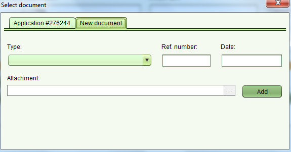

Ajouter Document
Plusieurs fonctionalités (comme Demande et Service) doivent être accompagnées de documents.
- Pour ajouter un document à une demande, utiliser l'onglet Document dans l'écran Demande. Remplir les détails du document, puis cliquer l bouton “...” dans le champ de texte d'attachment pour attacher un document numérique.
- Pour ajouter des documents à un service, aller dans l'écran Propriété puis cliquer sur “Lier Titre Papier” (pour presque tous les services) ou “Ajouter” (pour Modification Cadastre, Redéfinition Cadastre...) dans la section document.
Ceci va ouvrir un écran tabulaire pour sélectionner les documents nécessaires de la liste des documents de Demande ou pour ahouter un nouveau document.

Pour ajouter un nouveau document, remplir les détails du document,
cliquer le bouton “...” dans le champ texte d'Attachement pour attacher un document numérique
et enfin cliquer sur le bouton “Ajouter”. Le document est ajouté à la liste des titres de propriété papier dans l'écran Propriété.
Voir aussi